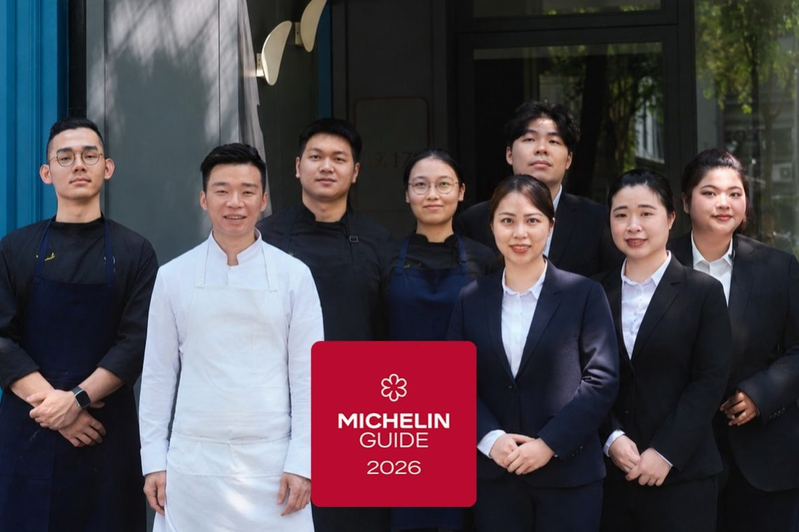
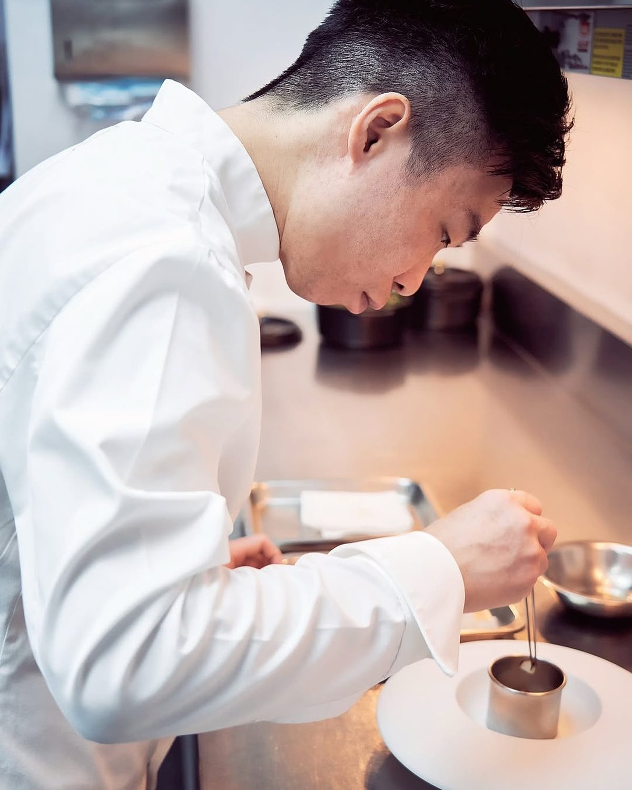
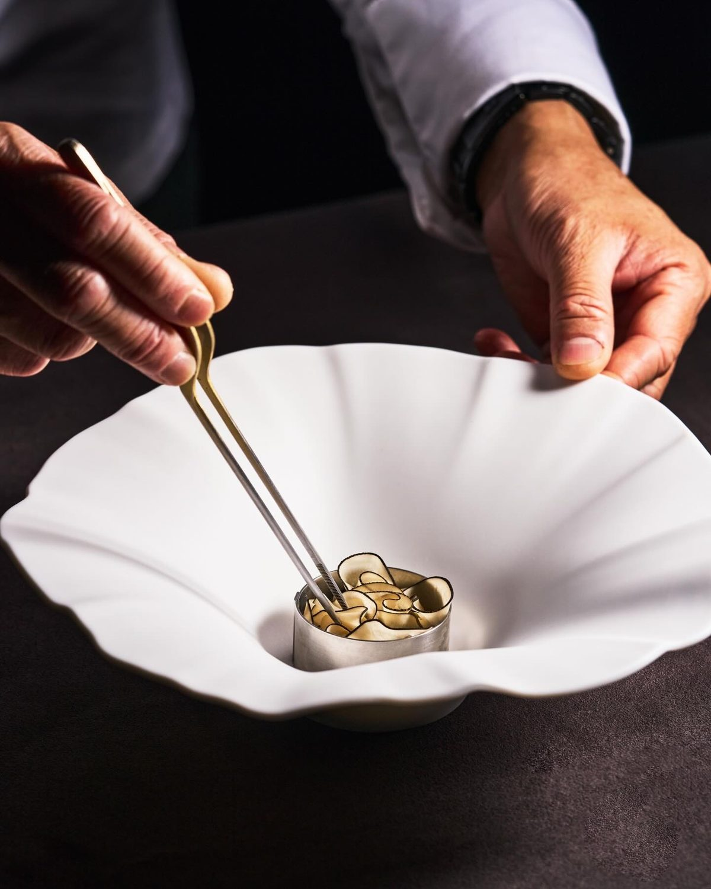
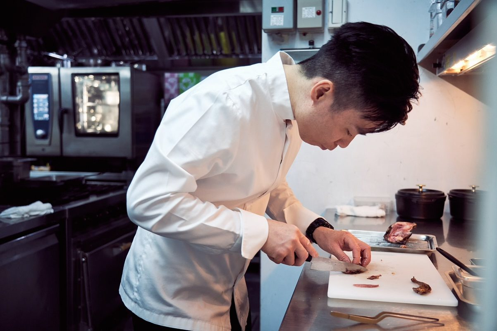
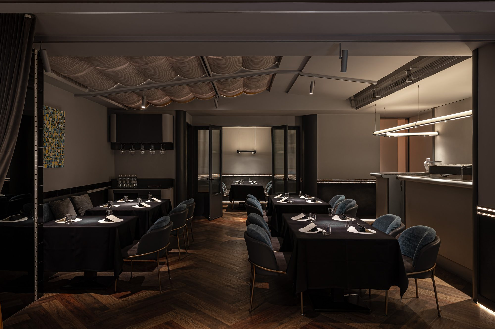

Chef & Team
Kei Koo
Light, unshowy — let the ingredients speak.

Doing it well once is not hard. Doing it just as well every time is.
Taiwanese ingredients, French bones, and his own reading of both — a language spoken only at de nuit.
Born in Hong Kong · Amber · Écriture · T+T
MICHELIN Young Chef Award 2022
At de nuit since April 2023





Le passage
The corridor
Before you reach your table, there is a short corridor. The city’s pace stays outside.
A room of deep grey and blue, brass details, velvet chairs, and one private room for six.